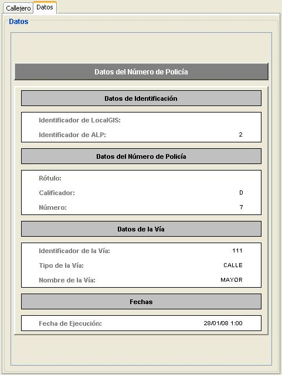

Datos
En este panel se muestran
todos los datos alfanuméricos que contiene cada una de las operaciones
realizadas desde la aplicación Avanza Local Padrón.
Cada vez que se seleccione una de las operaciones de la tabla se cargará
la operación correspondiente que se haya seleccionado, mostrado la información
alfanumérica propia de cada tipo de entidad a la que hace referencia la
operación.
Para cada uno de los tipos de entidad existentes
habrá un conjunto distinto de campos en la información alfanumérica mostrada.

Para los Números de Policía
los campos de información son:
- Identificador de LocalGIS: identificador que posee el número de policía en la plataforma de LocalGIS.
- Identificador de ALP: identificador del número de policía en la plataforma Avanza Local Padrón.
- Rótulo: campo de la aplicación LocalGIS mediante el cual se identifican a cada uno de los
portales (ejemplo: 2 D). Este campo es equivalente a la composición de los
campos Calificador y Número, de ALP.
- Calificador: campo que indica la letra del portal o número de policía. Este campo es propio
del sistema de identificación de los números de policía en la plataforma ALP.
- Número: campo que identifica el número del portal o número de policía. Este campo es propio
del sistema de identificación de los números de policía en la plataforma ALP.
- Identificador de la Vía: campo que indica el identificador de la vía en la que se encuentra el portal.
- Tipo de la Vía: indica el tipo de la vía en la que se encuentra el portal.
- Nombre de la Vía: muestra el nombre de la vía en la que se encuentra el número de policía.
- Fecha de Ejecución: fecha en la se ha realizada la operación que se muestra.

Para las Vías los campos de información son:
- Identificador de LocalGIS: identificador de la vía en el sistema de LocalGIS
- Identificador de ALP: identificador de la vía en la aplicación de ALP.
- Tipo de la Vía: tipo de la vía
- Nombre de la Vía: nombre de la vía, este nombre es el dado por el INE.
- Código: código INE de la vía.
- Fecha de Grabación y de Cierre: fecha de Grabación y de Cierre.
- Fecha de Grabación del Ayuntamiento: fecha de grabación del ayuntamiento.
- Fecha de Ejecución: fecha de ejecución de la operación.